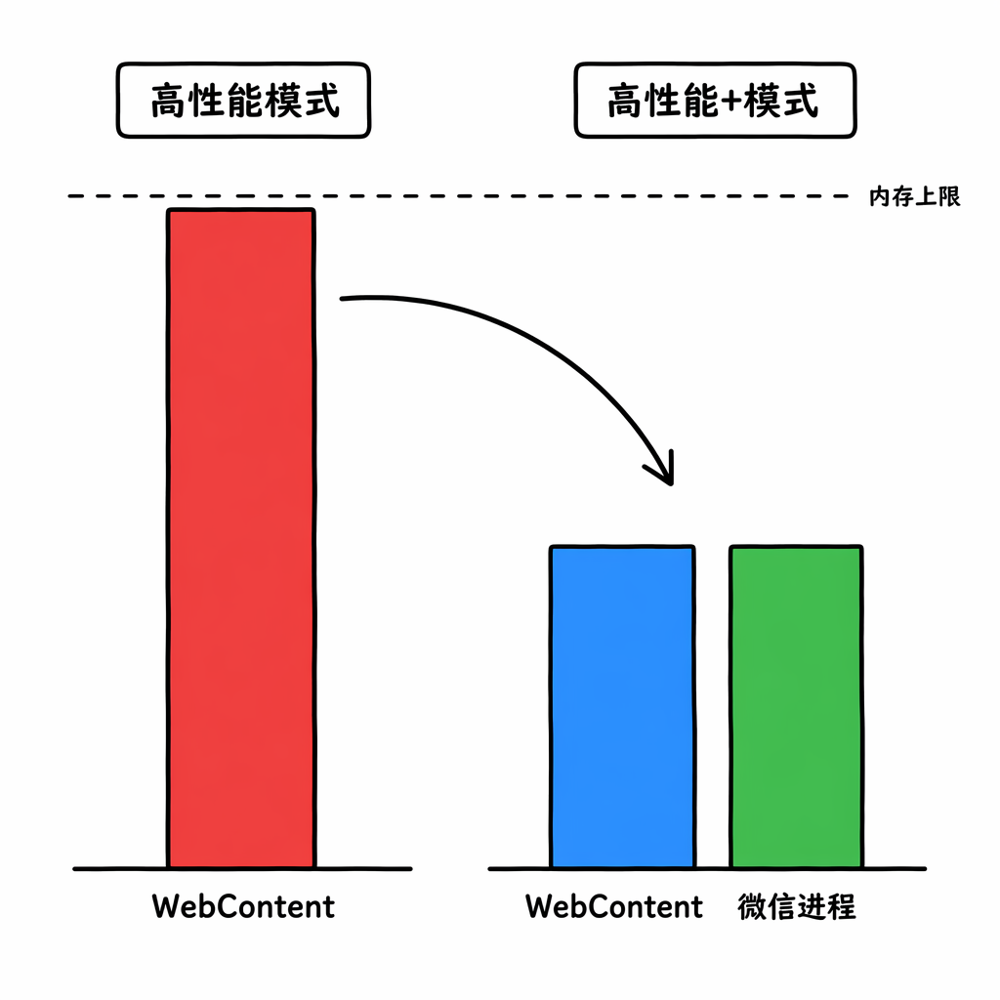
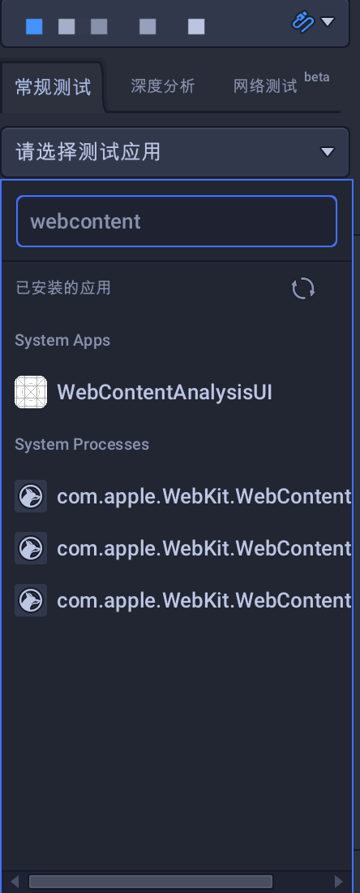
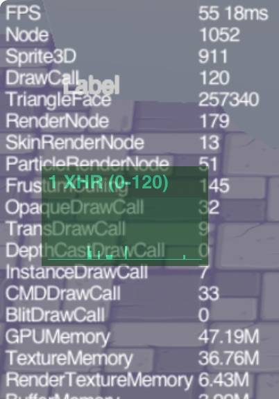

背景
在现在的团队待了两年多，对接过的开发商名字颇攒了一些。
有件事说来意外，却确实普遍：很多开发者，不乏一些收益颇丰的团队，并不了解游戏在 iOS 上到底跑的是哪个模式。
帧率低了、卡顿率高了来咨询。我问高性能模式开了没有。回答或是不清楚什么是高性能模式，或是不知道有什么坑所以没开。
回答多了甚至有近似膝跳反射的感受，因此以个人视角写下这篇文章来介绍一下这三种模式，希望或多或少能帮助开发者。
如果读者非技术出身，可以直接跳到最后一章；如果读者是技术出身，那么建议逐章向下读；
历史的进程
普通模式的痛
时间拨回到好几年前，那会还是跳一跳刚上线的时候。
iOS 上 App 内嵌的网页都跑在 WKWebView 里，底层引擎是 JavaScriptCore。引擎本身其实支持 JIT，能把热点编译成机器码。
但苹果自有他安全方面的考量——不开给第三方（当然也包括了微信），只有 Safari 和系统级 WebKit 进程有 JIT 权限。
安卓上的微信没这问题，因为安卓微信的底层是 V8，默认 JIT 是支持的。
这样就解释了为什么远古时期，iOS版本的微信小游戏的性能远不如安卓。
又由于微信小游戏本身是跨平台的，这也因此就导致了微信小游戏在彼时难以重度化。
破局：高性能模式
吉德林法则：把难题清清楚楚地写出来，便已经解决了一半。
微信进程肯定不算系统 WebKit、拿不到 JIT，那也好办，就让微信在启动小游戏的时候，将其跑到一个新拉起的独立系统 WebKit 里，微信基础库 2.23.1 开始，高性能模式应运而生。
由于游戏逻辑和渲染都跑在一个独立的 WebContent 进程中。因为是进程级的 WebKit，系统把它视为系统 WebKit 进程，因此 JIT 通了。
很好用，性能很不错，能力启用和项目适配的方法也很简单，技术上颇为遥遥领先了一阵。
当然，友商们也很快跟进这个技术，配置方法也惊人的一致，祝贺他们。
性能的提升催生了游戏的重度化——随着游戏越来越重，问题自然也滚滚而来。
由于系统 WebContent 进程完全由苹果控制，在这个进程内，开发商或者平台都完全插不进手。
因此它也就带来了两个主要问题：
内存更敏感，因此容易OOM导致crash；
WebGL2 的限制；
好消息：系统 WebContent 进程毕竟由微信派生，平台还是可以稍微插手的；
高性能+模式：不只是内存的优化
WebContent 进程的内存限制很严格，我们通常建议开发者将这个进程的内存占用限制在 1.2G 以内，当然越低越好。
但是很难的啦，一个进程既要运行基础库，还得运行游戏逻辑，还要编译 wasm，还要做JIT，还要负责渲染，你跺你也麻。
但是话说回来：渲染通常与业务逻辑是分离的，所以理论上来说，我们可以把渲染的逻辑挪回微信进程！
这样一来，显存就可以挪回微信进程。原本针对一个进程的内存限制，现在分担在微信和WebContent两个进程上。
并且，由于渲染挪回微信进程，而微信内的相关逻辑当然可以由我们自定义。这样一来，WebGL2 的限制也可以顺手解决。
好用，推荐用。

需要注意的点
高性能/高性能+ 模式的内存观测
如果你的游戏开启了高性能/高性能+ 的模式，你大概率会发现后台上报的小游戏内存占用值很低，但与此同时游戏的内存异常退出概率还挺高的？
因为高性能/高性能+ 的模式下，主要的内存瓶颈在WebContent 进程。而现网运行时， WebContent 进程的内存占用无法被直接观测到。
所以没错，此时后台上报的小游戏内存占用值是不准的，它只能上报微信进程内的内存占用。
这里划重点，要考的：
高性能/高性能+ 模式的内存观测，你需要通过xcode、perfdog等工具，定位 WebContent 进程，而非微信进程。

顺带一提，WebContent 进程可能有多个，找内存占用最大的那个。
WASM编译内存的占用
广义来说是WASM环境的游戏引擎，狭义来说，瞄准的就是 Unity 和 团结。
简单来说：
高性能/高性能+模式下的 WASM 编译内存是一个很头大的问题。由于 WebContent 进程完全由苹果控制，因此无论是平台还是开发者，都无法收集到 WASM 编译内存占用的详细信息。
但是总体来说，WASM 编译的内存占用主要分为瞬时的内存尖峰和持续性的内存占用。
对 OOM 影响最大的，还是瞬时的内存尖峰。当 WASM 被加载后将开始进行编译，此时会出现一个瞬时的尖峰。当 WASM 太大，尖峰将会非常高，很容易导致 OOM。
顺带一提，iOS 18.3 系统及之后，WASM 的编译的瞬间内存占用高了不少，如果不进行 WASM 分包，则大概率一进入游戏就会 OOM 闪退。
这也意味着 WASM 分包对 Unity 或者 团结的小游戏开发来说，已经变成了一个必须的流程。
再来划一个重点：
因为 WASM 在 iOS 上的编译内存实时占用目前在iOS体系下不好量化，因此不要迷信把所有逻辑都编到WASM中。很多时候解释性脚本（例如HybridCLR、Lua）是必要的。
XHR：高性能+ 模式的阿喀琉斯之踵
在某些时候，你可能会发现高性能+模式比高性能模式更卡顿，运行也更烫。
这倒不是错觉，因为高性能+模式下的渲染逻辑挪回微信进程，因此小游戏在高性能+模式下，多了一份 WebContent 和微信进程进行通信的开销。
这个开销可以通过 XHR 请求的形式来进行观测——在打开开发调试开关后，点击左上角的fps帧率面板，可以切换到 XHR 请求次数和带宽查看面板，可以查看 XHR 请求次数和带宽开销。

在高性能+模式下，建议将 XHR 次数控制在5以下，完美情况下，这个数字应该被控制在 1 ；而 XHR 带宽开销则建议控制在 500kb 以下。
如果你观察到你的游戏在高性能+模式下发烫、卡顿，在高性能模式下则无这个情况，那大概率问题就在 XHR 请求次数和带宽开销上。
尝试优化你的渲染流程，减少 XHR 请求次数和带宽开销。
锁屏或切到后台，再切回小游戏，提示OOM
这是开发者常见的疑惑，但是这个现象很正常。“很正常”的意思就是：不奇怪。
更明确一些的意思就是：一个系统 WebKit 进程在iOS系统的眼里，本质上就是一个网页。
当它进入被判定为后台进程，那么 iOS 对它的忍受程度会降低，因此 OOM的阈值会低一些。
所以，很正常，无论是开发商还是平台，都没办法解决这个问题。
懒人结论
我是否应该放弃普通模式？
只有你确定你的游戏是休闲游戏，那么建议考虑使用普通模式。
否则只要满足以下的任意一个条件，则建议直接放弃普通模式：
- 你的游戏包含大量计算，例如海量割草、复杂物理模拟等；
- 你的游戏对帧率、丝滑程度要求比较高；
- 你的引擎是 Unity 或者 团结， 并且你的游戏不是超休闲游戏（比休闲游戏还轻度的游戏）；
我应该使用高性能还是高性能+模式？
满足以下条件时，建议使用高性能+模式：
- 你的游戏需要较大显存（说人话：贴图、模型等资产占比大）；
- 你的游戏有很酷炫的视觉效果（使用了WebGL2的特性）；
- 你的游戏的内存压力比较大（例如开启高性能模式后，后台观测到内存异常退出次数明显变高）；
- 开启高性能+模式后， XHR 请求次数和带宽开销符合标准；
我选择了普通模式后，应该注意什么？
- 你应该格外关注帧率和卡顿率；
- 你应该关注玩家反馈的发热或者功耗问题；
我使用了高性能模式后，应该注意什么？
- 你应该格外关注后台上报的内存异常退出率；
- 如果是Unity 或者 团结引擎的小游戏，你要格外关注 WASM 包的大小，务必确保走分包流程；
- 绝对要格外关注内存的占用情况；
- 要关注你的项目中是否有高级渲染特性的需求；
我选择了高性能模式+后，应该注意什么？
- 确保你的贴图、模型等资产是被放到显存中的（例如Unity小游戏 的贴图，需要确保 isReadable 为 false）；
- 时刻关注你的 XHR 请求次数和带宽开销；
- 关注卡顿率和帧率，如果不达预期并且切回高性能模式后变得丝滑，则大概率是 XHR 的问题；
- 也要关注 WASM 包的大小，务必确保走分包流程；